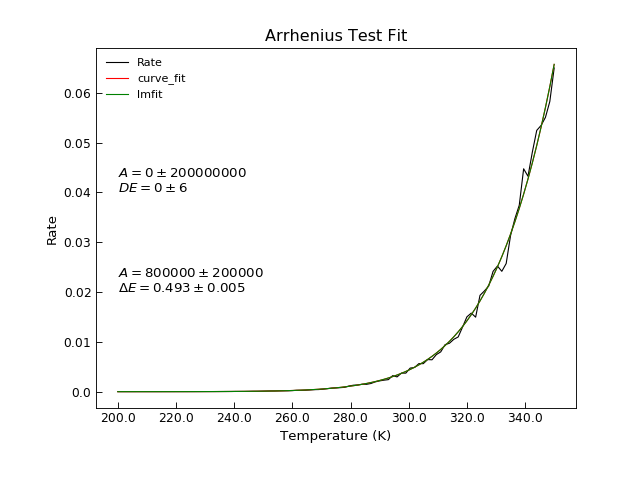

arrhenius¶
-
Stoner.Fit.arrhenius(x, A, DE)[source]¶ Arrhenius Equation without T dependendent prefactor.
Parameters: - x (array) – temperatyre data in K
- A (float) – Prefactor - temperature independent. See :py:func:modArrhenius for temperaure dependent version.
- DE (float) – Energy barrier in eV.
Returns: Typically a rate corresponding to the given temperature values.
The Arrhenius function is defined as \(\tau=A\exp\left(\frac{-\Delta E}{k_B x}\right)\) where \(k_B\) is Boltzmann’s constant.
Example
"""Example of Arrhenius Fit.""" from Stoner import Data import Stoner.Fit as SF from numpy import linspace from numpy.random import normal #Make some data T=linspace(200,350,101) R=SF.arrhenius(T+normal(size=len(T),scale=1.0,loc=1.0),1E6,0.5) d=Data(T,R,setas="xy",column_headers=["T","Rate"]) #Curve_fit on its own d.curve_fit(SF.arrhenius,p0=[1E6,0.5],result=True,header="curve_fit") d.setas="xyy" d.plot() d.annotate_fit(SF.arrhenius,x=200,y=0.04) # lmfit using lmfit guesses fit=SF.Arrhenius() p0=fit.guess(R,x=T) d.lmfit(fit,p0=p0,result=True,header="lmfit") d.setas="x..y" d.plot() d.annotate_fit(SF.Arrhenius,x=200,y=0.02,prefix="Arrhenius") d.title="Arrhenius Test Fit" d.ylabel="Rate" d.xlabel="Temperature (K)"
Include-source:

{kind=link}
{kind=link}